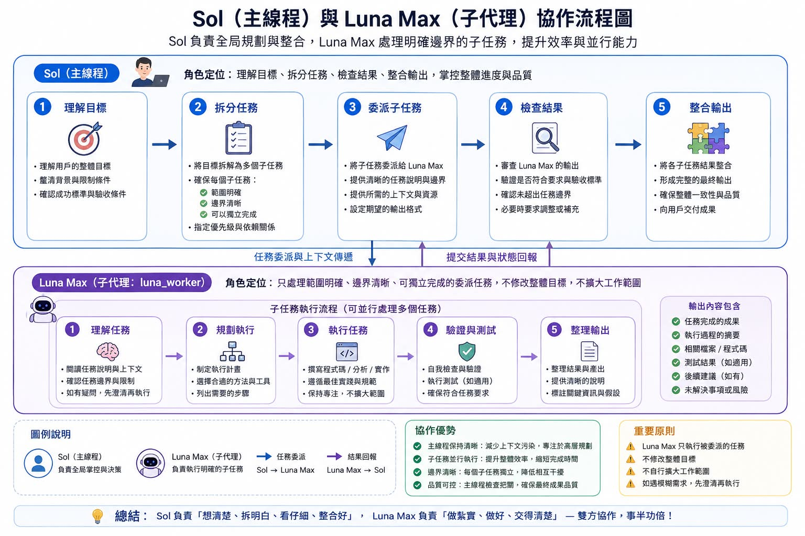

Threads｜Codex Sol 主代理＋Luna Worker 子代理：把 subagents 變成可檢查的派工流程

為什麼保存
這則 Threads 值得歸檔，是因為它把 Codex / ChatGPT Work 的 subagent 概念講成一張很容易教學的「主代理 + 子代理」流程圖：主代理不直接吃下所有工作，而是先拆出邊界清楚的子任務，交給 worker agent 執行，再由主代理檢查、整合與交付。
這個觀念和近期 agentic coding 的實務方向一致：效率不只來自更強模型，也來自任務切分、上下文隔離、結果驗證與回報格式。它特別適合用來說明：多代理不是「開越多越好」，而是要讓每個 agent 的責任、權限、輸入與完成標準都更清楚。
貼文可見重點
@dinghuanglin 的貼文主張：
> 最近看到有人分享這種「主代理（Main Agent）＋子代理（Worker Agent）」的 AI 工作流程，覺得概念很清楚。主代理 Sol 負責理解目標、拆解任務、委派子任務、檢查成果與整合輸出；子代理 Luna Worker 負責理解任務、規劃執行、執行工作、驗證測試與整理回報。貼文並提供 prompt，要求建立 `~/.codex/agents/luna-worker.toml`，設定 `model = "gpt-5.6-luna"` 與 `model_reasoning_effort = "max"`，再讓 Codex 依目前版本驗證、顯示差異，並使用 `luna_worker` 執行子代理任務。
圖卡標題為「Sol（主線程）與 Luna Max（子代理）協作流程圖」，可見流程如下：
| 角色 | 流程 | 角色定位 |
|---|---|---|
| Sol 主線程 / Main Agent | ① 理解目標 → ② 拆分任務 → ③ 委派子任務 → ④ 檢查結果 → ⑤ 整合輸出 | 負責全局規劃、任務邊界、品質檢查與最終交付。 |
| Luna Max / luna_worker | ① 理解任務 → ② 規劃執行 → ③ 執行任務 → ④ 驗證與測試 → ⑤ 整理輸出 | 只處理被派發、範圍明確、可獨立完成的子任務，不修改整體目標、不擴大工作範圍。 |
圖中也強調兩個方向：Sol 將任務派發與上下文傳遞給 Luna；Luna 回報結果與狀態。右側輸出清單包含任務成果、執行摘要、相關檔案/程式碼、測試結果、後續建議與未解決事項。
官方查核：Codex subagents 與 custom agents 是真功能
OpenAI / ChatGPT Codex 文件的 `Subagents` 頁面確認：ChatGPT Work 與 Codex 可以透過產生 specialized agents 並行處理工作，再把結果收回主回應；這對 codebase exploration、多步驟 feature plan 等高度可平行的任務特別有用。
官方文件也確認，Codex local clients 可以定義 custom agents：
- 個人全域 custom agents：`~/.codex/agents/`
- 專案限定 custom agents：`.codex/agents/`
- 每個 standalone TOML 檔案定義一個 custom agent。
- 必填欄位包含 `name`、`description`、`developer_instructions`。
- custom agent 檔案可以覆蓋 `model`、`model_reasoning_effort`、`sandbox_mode`、`mcp_servers`、`skills.config` 等設定；未指定時會繼承父 session 或 `[agents]` 預設。
也就是說，貼文提到的 `~/.codex/agents/luna-worker.toml` 方向與官方文件相符；真正需要查核的是該檔案內容是否符合目前 Codex schema、模型 slug 是否對帳號可用，以及 Codex 是否真的以指定 agent identity / model override 啟動。
重要限制：不一定「省總 token」
貼文說「節省 token 很有感」，這可以理解成：主代理不用把所有細節都塞進單一 context，工作拆分後主線程比較乾淨；但官方文件同時提醒：每個 subagent 都會做自己的模型與工具工作，因此 subagent workflow 可能比單一 agent run 消耗更多總 token。
比較精準的說法是：
- 可能節省主線程 context 污染與反覆重讀成本。
- 可能縮短 wall-clock time，因為多個子任務可並行。
- 不保證降低總 token，尤其在子任務切太碎、worker 反覆讀同一批檔案、或主代理還要重做檢查時。
- 要驗證是否真的省，最好把每個完成任務的 main/worker token、耗時、重讀檔案與返工次數分開記錄。
模型與版本查核：`gpt-5.6-luna` 需以本機可用性為準
Codex 官方 subagents 文件在模型選擇段落提到：`gpt-5.6` 可用於較困難的代理任務，`gpt-5.6-terra` 偏速度與低成本，`gpt-5.6-luna` 適合快速、範圍窄、可重複或高量工作的 agents；`model_reasoning_effort` 可依模型支援程度使用 `low`、`medium`、`high`、`xhigh`、`max` 或 `ultra` 等層級。
但本機環境查核時，Codex CLI 為 `0.131.0`，`~/.codex/models_cache.json` 目前只列到 `gpt-5.5`、`gpt-5.4`、`gpt-5.4-mini`、`gpt-5.3-codex`、`gpt-5.2` 等模型，尚未列出 `gpt-5.6-luna`。因此本文不把貼文 prompt 當作對所有帳號可直接複製成功的設定；更安全的做法是要求 Codex 先依照「目前安裝版本與可用模型」驗證，再顯示 diff。
可改寫成更安全的 prompt
如果要把貼文精神拿來實作，建議把「固定寫死模型」改成「先檢查再建立」：
```text
請檢查我目前 Codex CLI 版本、可用模型與官方 custom agents TOML schema。
如果此版本支援 ~/.codex/agents/*.toml，請建立一個名為 luna_worker 的 custom agent，檔案位置為 ~/.codex/agents/luna-worker.toml。
要求：
- 必填欄位需符合目前 Codex schema：name、description、developer_instructions。
- 只在本機可用模型清單中存在時才設定 model；若 gpt-5.6-luna 不可用，請改為繼承父 session 或選擇官方建議的可用輕量模型。
- 只在目前版本支援該 reasoning effort 時才設定 model_reasoning_effort。
- 預設 sandbox_mode 使用 read-only，除非我明確指定這個 worker 可以寫入 workspace。
- 不覆蓋我既有 ~/.codex/config.toml 中無關設定。
- 修改前先顯示計畫，修改後顯示 diff，並執行一次只讀驗證任務測試 luna_worker 是否能被委派。
```
這樣保留 Sol/Luna 的分工概念，但避免因版本、帳號或模型名稱不同導致配置失敗。
延伸：production-safe profiles 的社群補充
留言中 @arumwu 補充 `arumwu/arum-codex-subagents`：一組 12 個 production-safe Codex custom-agent profiles。GitHub API 查核時 repo 存在、MIT License、描述為「精選且 production-safe 的 12 個 Codex custom-agent profiles」。README 也明確提醒：雖然 TOML 符合官方 schema，不同 Codex surface / 版本是否完整套用 custom identity，仍需在本機個別驗證。
這個補充值得保留，因為它把「只做一個 luna_worker」延伸成更工程化的 agent catalog：例如 `code_mapper`、`docs_researcher`、`reviewer`、`security_auditor` 等唯讀 worker，可以降低子代理亂改 production 的風險。
對欒帥的應用建議
這則內容可放進 AI 工作流課程或 Hermes 自動化教學，重點不是「照抄 luna_worker」，而是教三個觀念：
- **主代理負責治理，不負責所有細節**：拆任務、訂成功標準、檢查結果、整合輸出。
- **子代理要小而清楚**：一個 worker 只做一件可驗證的事，最好預設唯讀，只有明確需要時才給 workspace-write。
- **用 telemetry 驗證效率**：不要只相信「省 token」的體感；要量測主線程/子線程 token、耗時、返工、測試通過率與最終品質。
風險與限制
- Threads 圖卡與 prompt 是社群教學素材；實際可用性需以 Codex 官方文件、本機 CLI 版本與帳號可用模型為準。
- Subagents 可能提升並行效率，但不保證節省總 token；切分不當反而會增加成本。
- `model = "gpt-5.6-luna"` 不是所有本機環境都可見；應先檢查 `codex --version`、模型清單與官方文件。
- custom agent 不等於安全邊界；仍需 sandbox、權限、MCP server、檔案寫入範圍與人工審查控管。
- 子代理若回報不完整，主代理必須重新驗證，不能直接把 worker summary 當成事實。
來源
- Threads 原貼文：`https://www.threads.com/@dinghuanglin/post/DblB9mKH2gV`
- Codex CLI docs：`https://learn.chatgpt.com/docs/codex/cli.md`
- Codex Subagents docs：`https://learn.chatgpt.com/docs/agent-configuration/subagents.md`
- arum-codex-subagents：`https://github.com/arumwu/arum-codex-subagents`